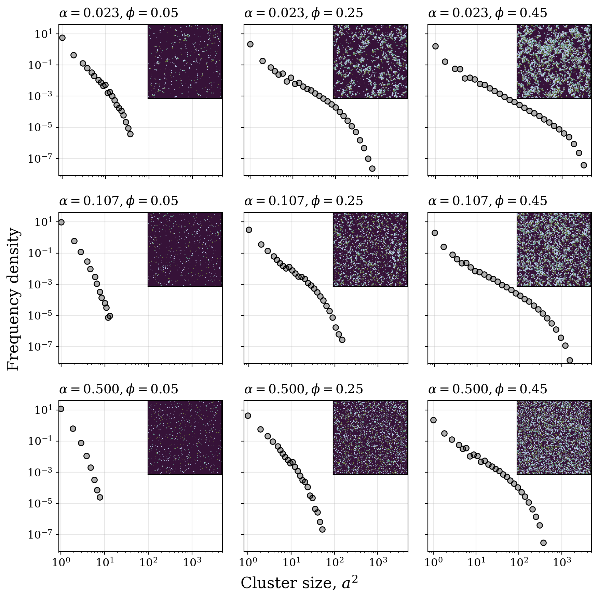

import os
os.chdir("/hades/projects/persistent-exclusion-process/src")
import glob
import h5py
import matplotlib.pyplot as plt
from mpl_toolkits.axes_grid1.inset_locator import InsetPosition, inset_axes
import numpy as np
from cmcrameri import cm
from scipy import ndimage
from plot_utils import get_plot_configs
from stringato import extract_floats
from utils import get_ds_iters, get_cluster_labels
plot_configs = get_plot_configs()
plot_configs["xtick.labelsize"] = 12
plot_configs["ytick.labelsize"] = 12
plt.rcParams.update(plot_configs)
fig = plt.figure(figsize=(9, 9), constrained_layout=True)
gspec = fig.add_gridspec(3, 3, wspace=0.08, hspace=0.08)
cmap = plt.get_cmap(name="cmc.glasgowS", lut=5)
files = sorted(glob.glob("../bp_data/dataset*"))
stuff = []
for file in files:
tumble = float(extract_floats(file)[0])
density = float(extract_floats(file)[1])
stuff.append((tumble, density))
ctr = 0
text_kwrgs = {"ha": "left", "fontsize": "medium", "fontfamily": "serif"}
kernel = [[0, 1, 0], [1, 1, 1], [0, 1, 0]]
for idx in range(3):
for jdx in range(3):
axis = fig.add_subplot(gspec[idx, jdx])
axins = inset_axes(axis, width="100%", height="100%", borderpad=1)
axins.set_axes_locator(InsetPosition(axis, [0.525, 0.51, 0.49, 0.49]))
text_kwrgs["s"] = r"$\alpha = {}, \phi = {}$".format(
files[ctr][26:31], files[ctr][32:36]
)
hf = h5py.File(files[ctr], "r")
key_list = list(hf.keys())
iters = get_ds_iters(key_list)
all_cs = np.array([])
img = hf[f"conf_{iters[-1]}"]
axins.matshow(img, cmap=cmap)
axins.set_yticks([])
axins.set_xticks([])
for iter in range(len(iters)):
im = hf[f"conf_{iters[iter]}"]
labelled, _ = ndimage.label(im, structure=kernel)
cluster_sizes = np.bincount(labelled.flatten())[1:]
all_cs = np.hstack((all_cs,cluster_sizes))
min_c = np.min(all_cs)
max_c = np.max(all_cs)
bin_edges = np.logspace(np.log2(min_c), np.log2(max_c), 32, base=2)
counts, _ = np.histogram(
all_cs, bins=bin_edges, density=True
)
axis.scatter(
bin_edges[:-1],
counts,
edgecolor=(0, 0, 0, 1),
facecolor=(0, 0, 0, 0.3),
)
axis.grid(alpha=.3)
axis.set_axisbelow(True)
axis.set_yscale("log"), axis.set_xscale("log")
axis.text(
y=1.05,
x=0,
transform=axis.transAxes,
**text_kwrgs,
)
axis.set_ylim((8e-9, 4e1))
axis.set_xlim((0, 5e3))
# axis.set_yticks([10**idx for idx in range(-8, 2, 2)])
# axis.set_xticks([10**idx for idx in range(0, 5)])
fig.supxlabel(r"Cluster size, $a^{2}$")
fig.supylabel("Frequency density")
if jdx != 0:
axis.set_yticklabels([])
if idx != 2:
axis.set_xticklabels([])
ctr += 1
name = "csize_avg"
fig.savefig(f"../plots/{name}.pdf", bbox_inches="tight")
fig.savefig(f"../plots/{name}.png", bbox_inches="tight")/tmp/ipykernel_89471/78759210.py:37: MatplotlibDeprecationWarning: The InsetPosition class was deprecated in Matplotlib 3.8 and will be removed two minor releases later. Use Axes.inset_axes instead.
axins.set_axes_locator(InsetPosition(axis, [0.525, 0.51, 0.49, 0.49]))
/tmp/ipykernel_89471/78759210.py:76: UserWarning: Attempt to set non-positive xlim on a log-scaled axis will be ignored.
axis.set_xlim((0, 5e3))
/tmp/ipykernel_89471/78759210.py:37: MatplotlibDeprecationWarning: The InsetPosition class was deprecated in Matplotlib 3.8 and will be removed two minor releases later. Use Axes.inset_axes instead.
axins.set_axes_locator(InsetPosition(axis, [0.525, 0.51, 0.49, 0.49]))
/tmp/ipykernel_89471/78759210.py:76: UserWarning: Attempt to set non-positive xlim on a log-scaled axis will be ignored.
axis.set_xlim((0, 5e3))
/tmp/ipykernel_89471/78759210.py:37: MatplotlibDeprecationWarning: The InsetPosition class was deprecated in Matplotlib 3.8 and will be removed two minor releases later. Use Axes.inset_axes instead.
axins.set_axes_locator(InsetPosition(axis, [0.525, 0.51, 0.49, 0.49]))
/tmp/ipykernel_89471/78759210.py:76: UserWarning: Attempt to set non-positive xlim on a log-scaled axis will be ignored.
axis.set_xlim((0, 5e3))
/tmp/ipykernel_89471/78759210.py:37: MatplotlibDeprecationWarning: The InsetPosition class was deprecated in Matplotlib 3.8 and will be removed two minor releases later. Use Axes.inset_axes instead.
axins.set_axes_locator(InsetPosition(axis, [0.525, 0.51, 0.49, 0.49]))
/tmp/ipykernel_89471/78759210.py:76: UserWarning: Attempt to set non-positive xlim on a log-scaled axis will be ignored.
axis.set_xlim((0, 5e3))
/tmp/ipykernel_89471/78759210.py:37: MatplotlibDeprecationWarning: The InsetPosition class was deprecated in Matplotlib 3.8 and will be removed two minor releases later. Use Axes.inset_axes instead.
axins.set_axes_locator(InsetPosition(axis, [0.525, 0.51, 0.49, 0.49]))
/tmp/ipykernel_89471/78759210.py:76: UserWarning: Attempt to set non-positive xlim on a log-scaled axis will be ignored.
axis.set_xlim((0, 5e3))
/tmp/ipykernel_89471/78759210.py:37: MatplotlibDeprecationWarning: The InsetPosition class was deprecated in Matplotlib 3.8 and will be removed two minor releases later. Use Axes.inset_axes instead.
axins.set_axes_locator(InsetPosition(axis, [0.525, 0.51, 0.49, 0.49]))
/tmp/ipykernel_89471/78759210.py:76: UserWarning: Attempt to set non-positive xlim on a log-scaled axis will be ignored.
axis.set_xlim((0, 5e3))
/tmp/ipykernel_89471/78759210.py:37: MatplotlibDeprecationWarning: The InsetPosition class was deprecated in Matplotlib 3.8 and will be removed two minor releases later. Use Axes.inset_axes instead.
axins.set_axes_locator(InsetPosition(axis, [0.525, 0.51, 0.49, 0.49]))
/tmp/ipykernel_89471/78759210.py:76: UserWarning: Attempt to set non-positive xlim on a log-scaled axis will be ignored.
axis.set_xlim((0, 5e3))
/tmp/ipykernel_89471/78759210.py:37: MatplotlibDeprecationWarning: The InsetPosition class was deprecated in Matplotlib 3.8 and will be removed two minor releases later. Use Axes.inset_axes instead.
axins.set_axes_locator(InsetPosition(axis, [0.525, 0.51, 0.49, 0.49]))
/tmp/ipykernel_89471/78759210.py:76: UserWarning: Attempt to set non-positive xlim on a log-scaled axis will be ignored.
axis.set_xlim((0, 5e3))